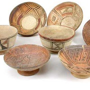
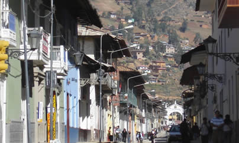

Hasta el momento, aún no se ha podido determinar exactamente cuándo llegaron los primeros seres humanos a Cajamarca. Probablemente, su arribo haya sido en un estado primitivo, pero gracias a su capacidad inventiva fueron capaces de organizar una gran cultura. Los restos encontrados en las cuevas del cerro Cumbe muestran la presencia de una cultura lítica muy diferente a las coexistentes en el Antiguo Perú y demuestran que su alimentación consistía en el consumo de venados y cuyes silvestres
El origen de la ciudad de Cajamarca se inicia aproximadamente hace 3 mil años atrás con los primeros grupos humanos Huacaloma, Layzón, Cumbe Mayo y Otuzco. Alcanzó su mayor desarrollo entre los años 500 y mil de nuestra era como centro poblado de la cultura Casamarca.
En e l año de 1450, durante el gobierno del Inca Pachacutec, su hermano Capac Yupanqui conquista la región anexándola al Tahuantisuyo. En 1532 la ciudad de Cajamarca fue escenario de uno de los acontecimientos más trascendentes de la Historia Universal. La captura del Inca Atahualpa por un grupo de españoles al mando de Francisco Pizarro produciéndose el encuentro de dos mundos, el origen del mestizaje y una nueva época en la historia del Perú. En el lugar donde hoy se levanta la plaza de armas de Cajamarca, en el año de 1532 el marqués Francisco Pizarro capturó al Inca Atahualpa, que había rehusado someterse a la Corona española y a la fe cristiana. A cambio de su liberación, el Inca ofreció llenar un recinto con oro, y dos veces con plata. Se dice que el volumen del rescate fue tal, que la fundición de los metales duró más de treinta días. A pesar de ello, nueve meses después de su captura los conquistadores condenaron al Inca a la pena del garrote. A partir de entonces, los españoles se asentaron en la ciudad y adaptaron su trazado incaico al diseño en cuadrícula o en [damero]. De la ciudad incaica de Cajamarca quedan pocos vestigios.
El Cuarto del Rescate de Atahualpa, el único vestigio inca conservado en Cajamarca. Iglesia de la Recoleta en 1920, junto a la Alameda del Panteón (Actual Avenida de los Héroes). Cajamarca es conocida principalmente debido a que en 1532, el inca Atahualpa fue visitado por representantes de Francisco Pizarro, mientras descansaba en los balnearios de aguas termales en Pultumarka, cerca de la ciudad. Al día siguiente, fue capturado en la Plaza de Armas y un año después fue ejecutado por los españoles, aún después de haber pagado una inmensurable recompensa de oro y plata. Sus tesoros pasaron a manos de los conquistadores, los cuales fueron enviados a España.